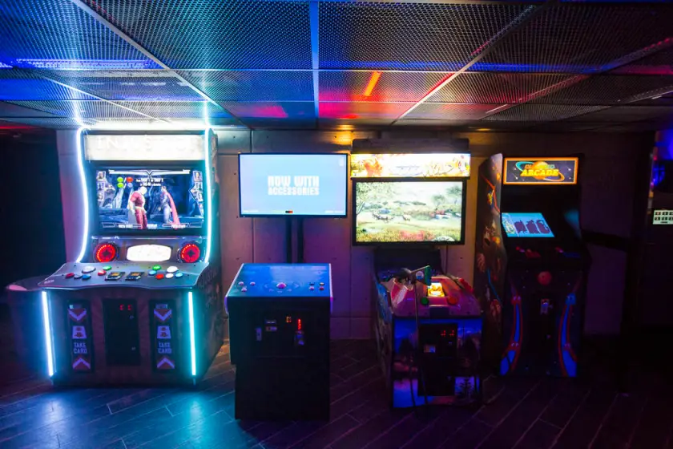
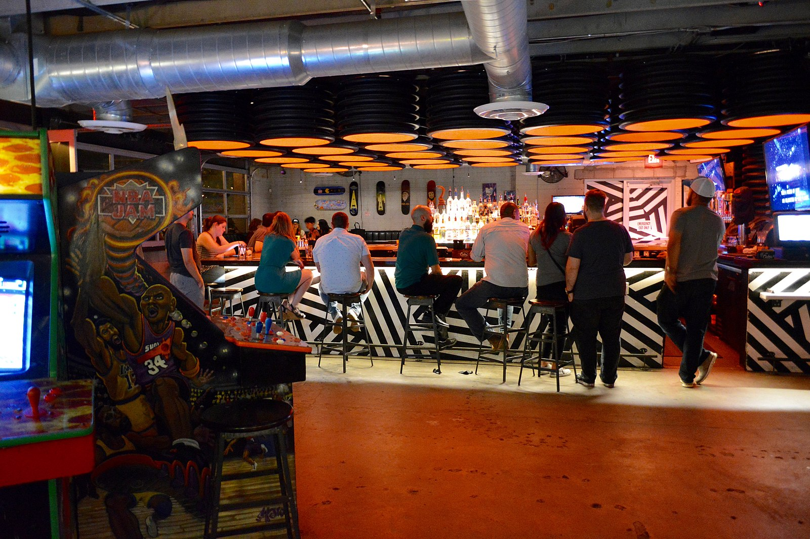
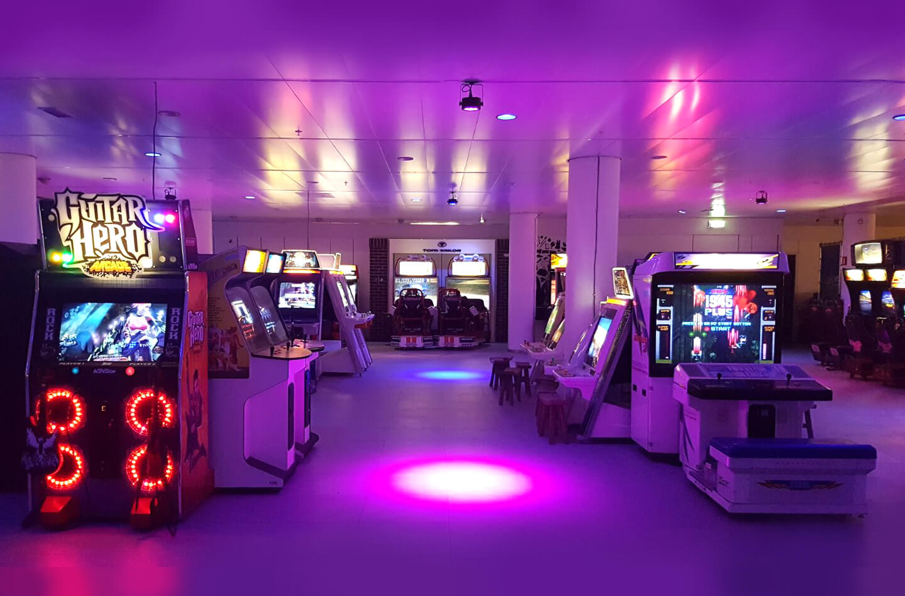

National Video Game Museum
The National Videogame Museum is 'the place to be' for anyone who wants to know more (and experience) about the history, social and cultural side of video games. The museum also lets its visitors experience the games of tomorrow. Gamers young and old are welcome to play, discover, learn and share experiences online.

Overview
The museum is located in the middle of the passage of Stadshart Zoetermeer, on the first floor at the top of the escalator
History
As soon as you enter the museum, you are showered with everything that makes the game culture so beautiful and impressive. Follow our timeline through the atmospheric rooms and discover the history of video games through the gamechangers, highlights and important moments in technology, artwork and culture within the game industry.

Barcade
Welcome to our Barcade, where modern catering and retro arcade cabinets come together in a cozy environment. Here you can refuel after hours of adventuring, challenges and saving the world. In addition to the well-known halal hot dogs and sandwiches, we now also offer healthy sandwiches.

Opening hours
Mon: Gesloten
Tue: Gesloten
Wed: 10.00-12.00 | 12.00-14.00 | 14.00-16.00 | 16.00-18.00 uur
Thu: 10.00-12.00 | 12.00-14.00 | 14.00-16.00 | 16.00-18.00 uur
Fr: 10.00-12.00 | 12.00-14.00 | 14.00-16.00 | 16.00-18.00 | 18.00-21.00 uur
Sat: 10.00-12.00 | 12.00-14.00 | 14.00-16.00 | 16.00-18.00 uur
Sun: 12.00-14.00 | 14.00-16.00 | 16.00-18.00 uur
Contact:
Twitter
Youtube
Facebook
Instagram
Ned
Eng
reviews
Read the reviews about the Videogame Museum here
https://kidseropuit.nl/nationaal-videogame-museum-zoetermeer/
Game
Start
0 : 0
Reset